Introduction
The glmcs package implements likelihood-based additive single-sffect regression (LASER), a sparse model that represents the overall effect as a sum of a small number of single-effect components. In this vignette we:
- Simulate a high-dimensional sparse Gaussian linear regression model
- Fit a Gaussian LASER model via
glmcs() - Visualize coefficient esimates, marginal inclusion probabilities, and confidence sets
- Evaluate predictive performance vs. SuSiE
Simulate data
We generate (n=1000) observations and (p=1000) variables, with only 4 true active (nonzero) effects.
set.seed(42)
n <- 1000 # sample size
p <- 1000 # number of predictors
L <- 10 # number of single-effect components
# true sparse coefficients
theta_true <- rep(0, p)
theta_true[c(100, 200, 300, 400)] <- 1
# covariate matrix and response
X <- matrix(rnorm(n * p), nrow = n, ncol = p)
y <- drop(X %*% theta_true + rnorm(n))Fit the LASER model
We allow up to (L=10) single effects and use the default Gaussian family. Generally, this method is robust to larger L values and present minimal risk of overfitting.
# load glmcs library
library(glmcs)
# model fitting
fit <- glmcs(
X = X,
y = y,
L = L,
family = gaussian()
)
summary(fit)
#
# Call:
# glmcs(X = X, y = y, L = L, family = gaussian())
#
# Family: gaussian
#
# Coefficients: (sorted by magnitude)
# Estimate MarginProb
# X300 1.0363 1
# X200 1.0082 1
# X100 0.9661 1
# X400 0.9505 1
# X1 0.0000 0
# X2 0.0000 0
# X3 0.0000 0
# X4 0.0000 0
# X5 0.0000 0
# X6 0.0000 0
# ... (990 more coefficients not shown)
#
# 95% Confidence Sets:
# Set Coverage
# cs1 {300} 1
# cs2 {200} 1
# cs3 {400} 1
# cs4 {100} 1
#
# Dispersion parameter: 0.9343
#
# Model converged after 3 iterations.
# Computation time: 13.28 seconds.Results
Coefficient estimates
We recover four peaks at the true locations
# plot coefficients
plot(fit, which="coefficients")
Estimated marginal inclusion probability (confidence)
Shows the inclusion probability each variable is included in any single-effect component:
# plot coefficients
plot(fit, which="probabilities")
Estimated 95\% confidence sets
Each confidence set (CS) contains a small group of variables where at least one is likely to be active, with 95\% confidence.
# plot coefficients
plot(fit, which="sets")
Performance evalution
# compare with SuSiE
fitted_susie <- fitted(susieR::susie(X, y, L))
fitted_glmcs <- fitted(fit)
rmse_susie <- sqrt(mean((y - fitted_susie)^2))
rmse_glmcs <- sqrt(mean((y - fitted_glmcs)^2))
data.frame(
Method = c("susie", "glmcs"),
RMSE = c(rmse_susie, rmse_glmcs)
)
# Method RMSE
# 1 susie 0.9728844
# 2 glmcs 0.9728829